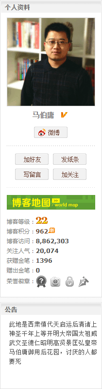

“醉自醉倒愁自愁，愁与酒如风马牛”，郭春海念了两句诗，大口喝着啤酒，然后继续撸串。
“你怎么就喜欢吃这些筋头巴脑的东西”，柴守宫和郭春海相识已久，知道这位老朋友撸串的时候很少吃肌肉，几乎都是各种内脏和其它软组织。
“容易识别还营养充沛，你看鬣狗都知道先掏屁眼把食材咬倒然后开膛破肚吃内脏”，郭春海嘴里咯吱咯吱嚼着鸡脆骨含糊的说，“以前出门在外人生地不熟的，随便找家馆子，谁知道是什么肉啊”。
“地沟油耗子肉已经曝光多少起了”，柴守宫点头同意，“一分钱一分货，贪便宜还想吃饱吃好，就得撞大运赌人品”。
“怎么赌都撞不上大运”，郭春海接着吃，“无商不奸，没人盯着当然就唯利是图喽”。
“不提这个了”，柴守宫看郭春海酒劲上涌，“你怎么又开始喝了？还喝这么多？”
“药吃完了，虽然感冒还没好”，郭春海回答，“过年这几天可是热闹，到处赶场蹭酒局”。
“听说挂了好几个”，柴守宫也知道最近乐极生悲的报道有点多，“还都让你赶上了”。
“各个趁我病要我命”，郭春海一点都不含糊，“知道我感冒了，哎呀一波一波来人劝酒”。
“你怎么应付的？”柴守宫有点担心，“可别死要面子活受罪，命是你自己的，千万别不当回事”。
“你看我现在活蹦乱跳的也知道撑过来了”，郭春海口气不满，“哪怕是善意的揣测，都知道是倚老卖老挤兑我，等着看笑话呢”。
“你到底喝了没有？”
“喝了呀，豁出去互相挤兑呗”，郭春海说，“拼死一个够本，拼死俩就赚一个”。
“那岂不是结仇了？”柴守宫知道出了人命就很难善罢甘休，“可不是得罪人那么简单”。
“人在江湖飘，哪儿能不挨刀？”郭春海还是满不在乎，“我得罪的人也不少了，哪怕是亲戚朋友”。
“得罪人也得讲究方式方法”，柴守宫谆谆教导，“有原则有立场是好事，但是作风简单粗暴就不好了”。
“跟我说话还打官腔？”郭春海听这种耳熟的套话感觉很刺耳，“你把人性看得太简单了”。
“我当然知道人心隔肚皮”，柴守宫刚参加完司法考试，背下的那许多奇葩案例还没来得及忘。
“跟我没关系的那几个倒霉催的醉死鬼”，郭春海提醒，“有拆迁钉子户，有无后为大的孝子贤孙，有头顶绿得发黑的接盘侠，还有高材生和骨干员工”。
“想也知道里面不简单，我们也没辙”，柴守宫点头同意，“辩方讼棍声色俱厉拍桌子瞪眼‘拿出唯物主义证据来！’被告睁大眼睛额头亮晶晶的装蒜兼贵人多忘事，还有假惺惺掉眼泪的，演技拙劣得很”。
“所以这种时候都想起来侠之大者为国为民了”，郭春海讽刺，“找你们讼棍不管用，就找董先生去了”。
“董先生？”
“董·柯里昂什么的”，郭春海口气含糊，“道上混出头来当了香主就认祖归宗改姓董了”。
“咳，你说这个”，柴守宫刚反应过来，“电视台成天放《神探亨特》，市面上流传的录像带反倒全是《古惑仔》什么的”。
“这是谁和谁在较劲呢”，郭春海摇摇头，“那时候想不明白，现在想明白了也晚了”。
“救命！”这时候传来尖锐的女声。
“不管”，郭春海伸手把柴守宫的脑袋扒拉回来，继续喝酒撸串。
“以前你可不是这样，也不是劝你杀伐果断的意思”，柴守宫有些不满，指着郭春海一身腱子肉，“但是能力越大责任越大”。
“这时候出事，多半是什么吟游诗人的整蛊节目，或者豪门贵种找乐子”，郭春海解释，“听说按照这大梁国的干部选人用人原则，还有筛查白手套的目的”。
“这我没听说过”，柴守宫的社会经验并不充沛。
“拾金不昧啦，扶老太太过马路啦，智斗盗贼公会啦……什么的”，郭春海解释，“然后反派女老板就会指使吟游诗人追着上当的家伙喷‘虽然你很丑，但是你穷吖’，再然后正派男老板就开始弘扬主旋律传播正能量《百万英镑》了”。
“你这话说的……”，柴守宫瞠目结舌。
“夫妻店的事少掺和，哪怕真闹起来也是床头吵架床尾和”，郭春海提醒，“更何况通常还是两口子唱双簧糊弄底下傻哔呢，上进心和闯劲爆表的栋梁之材们互相斗起来，自带干粮无私奉献比着献媚争宠拼业绩，家族企业才有竞争力”。
“看来这些年来你经历了很多”，柴守宫大约的确能理解。
“大哥！”那女的跑过来了，躲在郭春海旁边，后面追来一帮色目混混鸡鸣狗盗之徒。
“我喝多了”，郭春海打了个酒嗝，指着对面的柴守宫，“你让他个白面书生勇斗歹徒去吧”。
“哎”，没想到是这种台词，女人一时结巴了，“那您帮忙吆喝几句招呼人也行吖”。
“好吧”，郭春海深吸一口气，念诵台词字正腔圆，“呔！光天化日，朗朗乾坤，竟然当众行凶！这大梁国难道没有王法了不成？！”
“王法？”一个色目混混鸡鸣狗盗之徒鼻孔当中“嗤”了一声①，“在这江陵城地面上，梁王府就是王法！”
“呜呼呀！玉音放送可不是这个态度哟！”郭春海站起来，冲着柴守宫伸手，“今天我王某人就要讲经说法”。
“这个？”柴守宫掏出一部《学说汇纂》。
“不是这个，王法”，郭春海摆手，“出来混就要讲信誉，说用王法就用王法”。
“这个？”，柴守宫掏出一部《梁律疏议》第一卷《朕即国家我就是大局你们要顾全大局，讨厌的人都要死》②硬壳精装典藏版，厚达一拃。
“就这个”，郭春海一只手抓着都有点费劲，“脸皮厚得连子弹都挡得住”。
“有法可依有法必依执法必严违法必究，汝今能持否？”柴守宫问。
“不懂”，郭春海面向色目混混鸡鸣狗盗之徒，“接下来的依法治国实践，就靠你给我配音了”。
“罪不及王者”，柴守宫吆喝，“《一三五一年叛逆罪法》《一七九五年叛逆法》《一八四八年叛逆重罪法》”。
“嗯？”郭春海一愣，“你算哪边的？”
“法不责众”，柴守宫赶紧改口，“《一六四九年克伦威尔修订案》……吧”。
“嗯？”以寡敌众的郭春海一愣，“你到底帮谁？”
“王子犯法，庶民同罪⑴”，柴守宫吆喝，不提出处了。
“这还差不多，法语之言能无从乎？③”郭春海抡起王法向色目混混鸡鸣狗盗之徒头上砸去，“法爷永远是你大爷！”
“有治人，无治法⑵”！
“水可载舟，亦可覆舟⑶”！
“故圣人作则，必以天地为本⑷”！
“道之以政，齐之以刑，民免而无耻。道之以德 ，齐之以礼，有耻且格⑸”！
“天下之民归心⑹”！
……
色目混混鸡鸣狗盗之徒抱头鼠窜。
郭春海晃晃膀子，把王法还给柴守宫，坐下来准备继续用膳。
“真不愧是郭大侠”，这时传来一个熟悉的声音，还有稀稀落落的掌声。
“小刘？”郭春海回头一看，同事腋下夹着文件袋正在鼓掌。
“你被开除了”，小刘把文件袋递给郭春海。
“还有么？”郭春海似乎并不意外。
“领导托我给你带个话”，小刘抑扬顿挫的复述，“更能作‘甘洒热血写春秋’否？”
- ⑴「王子犯法，庶民同罪」：《野叟曝言》。另有《史记·商君列传》：于是太子犯法。卫鞅曰「法之不行，自上犯之」将法太子。太子，君嗣也，不可施刑……
Lex facit regem.
：法律做国王。法律规定领导者。法律在政权之上。 - ⑵「有治人，无治法」：《荀子·君道》。
Melius est ius deficiens quam ius incertum.
：有缺陷的法律也要比不确定的法律好。没有权利比不清楚的权利更好。 - ⑶「水可载舟，亦可覆舟」：《孔子家语》。
Lex non a rege est violanda.
：国王不可以违反法律。法律在国王之上。 - ⑷「故圣人作则，必以天地为本」：《礼记·礼运》。
Lex spectat naturae ordinem.
：法律考虑到自然的秩序。法律不能违背自然。 - ⑸「道之以政，齐之以刑，民免而无耻。道之以德 ，齐之以礼，有耻且格」：《论语·颜渊》。
Lex est tutissima cassis. Lex praescribit, evangelium inscribit.
：法律是最安全的头盔。法律仅作出规定，福音则铭刻在心。 - ⑹「天下之民归心」：《论语·尧曰》。
Obedientia est legis essentia.
：服从是法律的本质。 - ①②

注①  注② - ③ 「法语之言能无从乎」：《论语·子罕》